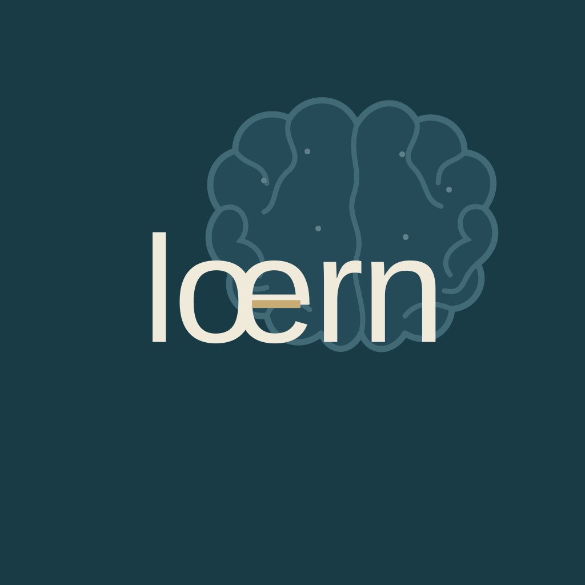
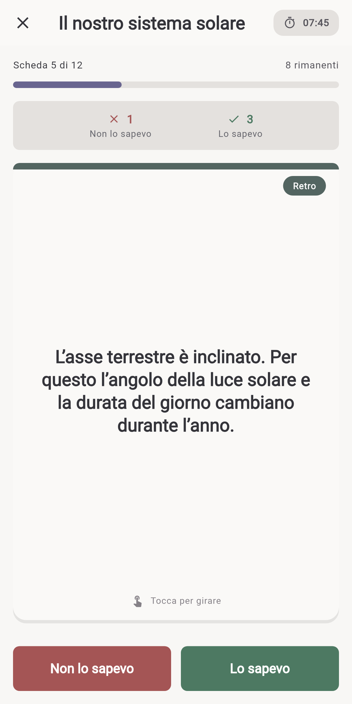
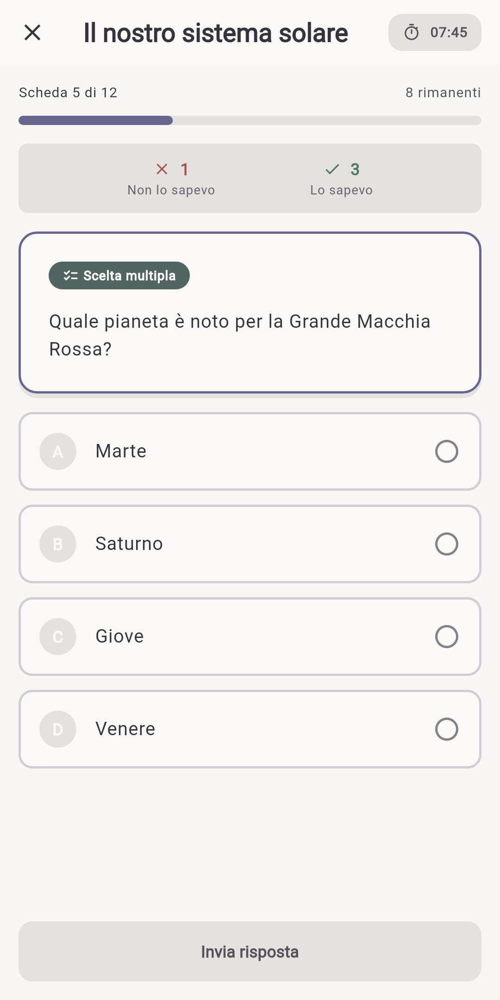
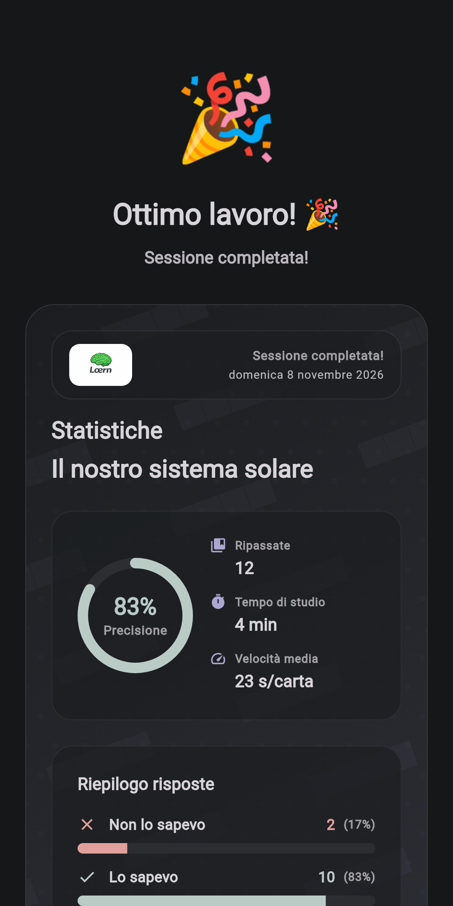

lœrn
Flashcard offline per creare e studiare i tuoi contenuti — semplici, flessibili e completamente tuoi.
Nessun account. Nessun cloud necessario. Il tuo materiale di studio resta sul dispositivo, a meno che tu scelga di esportarlo o condividerlo.
Uno sguardo a lœrn



Materiale di studio, senza tutta la piattaforma intorno
lœrn è un’app di flashcard per creare e studiare i tuoi contenuti. Crea mazzi per scuola, università, lingue, preparazione agli esami o qualsiasi altra cosa tu voglia ricordare, poi studia mettendo alla prova attivamente la memoria, al tuo ritmo.
Sei tu a decidere cosa va nei tuoi mazzi e quali strumenti ti aiutano a crearli.
L’IA può aiutare. Non deve per forza essere integrata nell’app.
L’IA generativa può essere molto efficace nel trasformare appunti in materiale di studio. lœrn mantiene volutamente questo servizio separato dall’app di flashcard.
Puoi usare ChatGPT o un altro strumento di IA che preferisci per generare flashcard e poi importare quel materiale in lœrn. In questo modo lœrn non deve gestire un proprio servizio di IA né sostenerne i costi ricorrenti.
Il vantaggio pratico: usa l’IA quando ti serve, scegli tu il fornitore e lascia che lœrn si concentri su archiviazione, organizzazione e studio del tuo materiale.
Perché è utile
Per imparare ogni giorno
Crea mazzi su qualsiasi argomento, dagli esami e le lingue ai viaggi o a un interesse personale.
Per studenti
Importa materiale dai tuoi appunti, esercita attivamente la memoria, segui i progressi localmente e condividi i mazzi.
Per insegnanti
Organizza il materiale in mazzi strutturati e condividilo con gli studenti tramite un’esportazione semplice.
Funzioni
Crea flashcard & organizza mazzi
Mazzi strutturati facili da creare, modificare e mantenere.
Memoria attiva & autovalutazione
Modalità di studio per ricordare, comprendere e ripetere.
Studio offline
I tuoi mazzi e le sessioni funzionano localmente, senza richiedere un account.
Importa & esporta
Importa materiale da appunti o strumenti esterni ed esporta i mazzi per backup o condivisione.
Sessioni flessibili
Ripassi veloci o sessioni più lunghe — scegli tu ritmo e durata.
Usa l’IA che preferisci
Genera materiale con lo strumento di IA che preferisci e importalo. lœrn resta indipendente da un servizio di IA integrato.